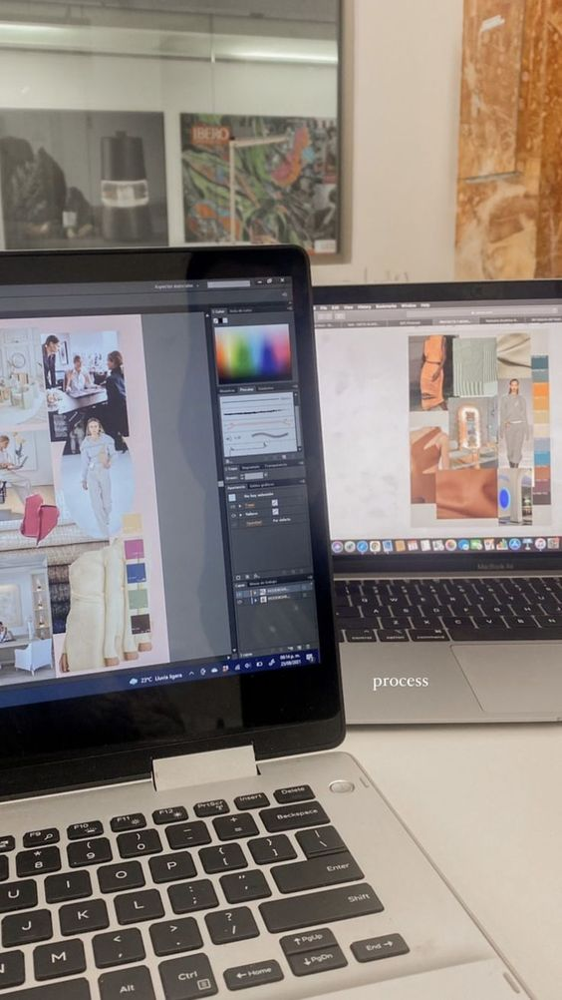

¡Hola!✨
Soy Mafer y tengo 20 años, actualmente me encuentro cursando el último año en la carrera de Publicidad y Marketing.
Me considero una persona optimista y proactiva, asimismo disfruto de aprender más acerca del arte y diseño en general.
Uno de mis hobbies es ver películas o series y sacar teorías de como terminarían.
Una de mis metas es poder culminar mi carrera y llevar un curso corto de diseño de modas✨
Un poco más acerca de mi experiencia en el campo laboral es que desarrollé funciones en el cargo de analista de marketing y diseño; y Community manager
con cuentas de distintos rubros lo cual me permitió crecer, ampliar mis conocimientos y descubrir nuevos campos.

Mis proyectos🌸
Un proyecto personal que esta en desarrollo es lograr crear una marca de ropa junto a mi enamorado, logrando juntar así dos profesiones que me gustan.
Este proyecto nació de la idea de querer tener algo propio y juntos, con el cual podamos lograr una fuente de ingreso, aprender a desarollarnos, planificar las cuentas y también lograr ser independientes.
Es un gran reto ya que anteriormente he sido parte de la creación de una marca además de pertenecer al área de marketing y creación de contenido para marcas de distintos rubros, por ello sé todo lo que puede llegar a conllevar.
Sin embargo es una gran oportunidad para poder poner en práctica mis conocimientos y lograr éxito por cuenta propia.